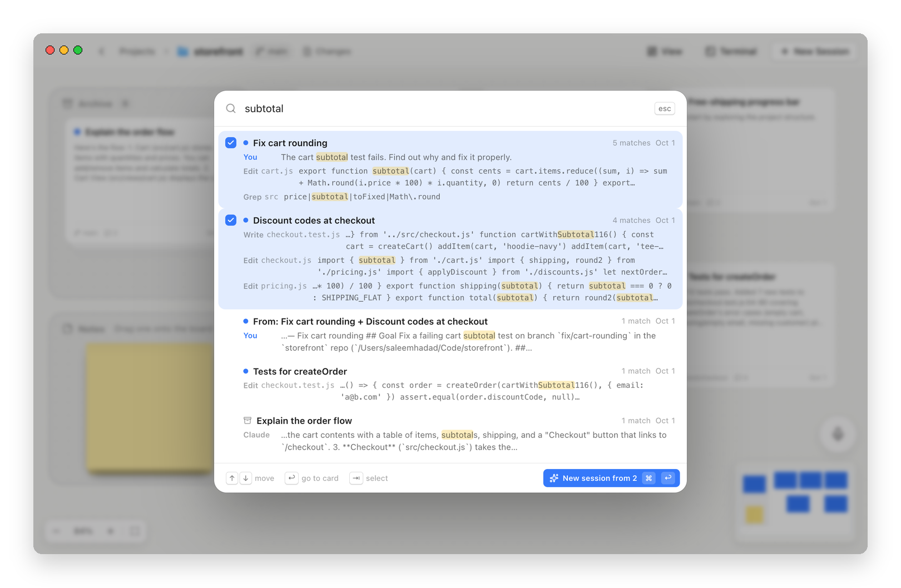
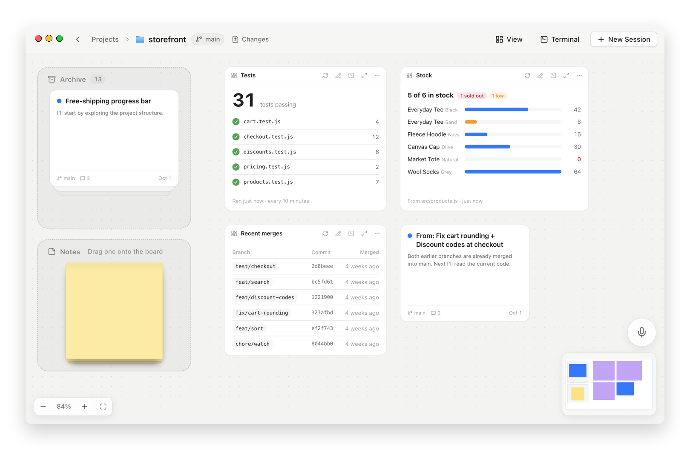

Free and open source, for macOS
Agentic coding,
on one board.
Every Claude Code session in a repo, as a live card. Spot the ones waiting on you, and start new sessions from the context of old ones.
Live status
Know which session needs you.
Every card shows its status, straight from Claude Code's own hooks. Orange is working, blue is done, and red means Claude is waiting on you. No more cycling through terminal tabs to find out.
The real terminal
The real Claude Code, one click away.
Click a card and you're in the actual claude TUI, not a copy of it. Or expand the card right on the board and watch it work while you keep an eye on the rest.
- Clickopen a card
- Eexpand it in place
- Ta shell in the project

New session from context
Never re-explain what you just did.
Select a few cards and start a session from their context. You get a handoff of what each one did, edit it if you like, say what's next, and the new session picks up from there.
- ⇧click cards to select them

Agents as a deck
See what every agent is up to.
When Claude runs agents, they peek out from under its card in their status colours. Point at the deck to fan them out, or click one for its live transcript.
Archive
Nothing gets lost.
Finished sessions stack up in one pile instead of cluttering the board. Hover it and type to search, then drag a card back out to pick the session up again.

Search
Which session touched that?
Search what every session said and did, live or archived: your prompts, Claude's replies, the files it edited and the commands it ran. Jump to the card, or pick a few results and start a new session from what they did about it.
- ⌘Ksearch every session
- ↩go to the card
- ⇥pick results to start from

Views
Any view you need, just by asking.
Describe what you want to keep an eye on, like your tests, your last deploys or your open tickets. Claude builds it as a live view on the board and keeps it fresh. Ask, and it adds buttons that start a session, like Fix beside a failing test.
- Viewdescribe a new one
- ✎ask Claude to change it
- Fixstart a session from it

Also on the board
Action buttons
Describe a chore once, like “pull and push, resolving conflicts”. Claude writes the button, and a press runs it in the background.
Sticky notes
Pin reminders anywhere on the board, or ask Claude to research something and pin what it found beside its card.
Speak a prompt
Press V, say what you want, check the text, and press Enter to start a session on it.
Sessions outlive the app
Quit Nodus and Claude keeps working. Open it again and everything is right where you left it.
Ready when you are
Put your sessions on a board.
Free and open source under MIT. Needs Claude Code.